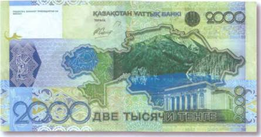
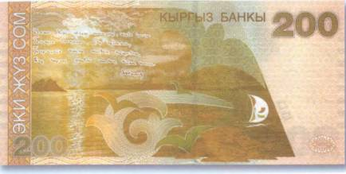
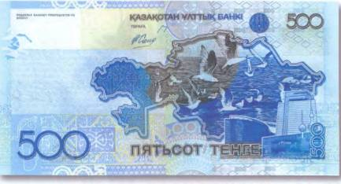
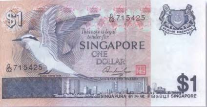

Тайны бумажных денег : Изумруды в оправе горных вершин

На казахстанской банкноте в 2000 тенге 2006 г. помещена захватывающая панорама одного из трех Кольсайских озер. Эти природные водоемы расположены в горах восточной части хребта Кунгей Алатау, в 300 км от Алматы. Еще не так давно попасть в те края было практически невозможно. Они считались заповедными, и это позволило на долгое время сохранить огромный по территории и разнообразию видов природный резерват нетронутым. В названии Кольсай (Кульсай) объясняется и его происхождение: «коль» — озеро, а «сай» — зеленое ущелье. Первое и самое нижнее озеро находится на высоте 1818 м. Оно питается водой из обоих верхних и в длину имеет не более километра. Второе и самое красивое раскинулось в 5 км выше по ущелью на высоте 2252 м. Это его изображение украсило купюру в 2000 тенге (рис. 142).

Еще 6 км дальше, на высоте 2650 м, находится третье озеро. Оно самое холодное, и на его берегах царит высокогорный климат. В окружающих водоемы лесах водятся медведи и кабаны, олени и косули, а также волки, лисы и зайцы. Очень богат мир пернатых. А в кристальной воде двух нижних озер хорошо прижилась завезенная сюда еще в советскую эпоху из Чехословакии радужная форель. Точная глубина озер неизвестна, но, скорее всего, она не превышает 70 м. Вода же настолько чистая, что дно хорошо просматривается на глубину 12 м. Говорят, в особо ясные дни, когда поверхность озер не тронута рябью, в них можно увидеть верхушки затопленных и таким образом оказавшихся на дне вековых сосен. Зрелище это настолько нереальное, что невольно начинаешь задумываться о его возможном мистическом происхождении. Очень изящно красота Кольсая описана Эдуардом Мацкевичем в его очерке «Останется ли Кольсай изумрудным?»:
«Озеро и впрямь кажется изумрудным. Стиснутая скалами вода светится, как огромный отполированный кристалл в ожерелье вечнозеленых тянь-шаньских елей. Утром, когда еще не взошло солнце, озеро выглядит нежно-матовым. А когда первые лучи, пробивая верхушки елок, коснутся его зеркальной глади, вода начинает играть множеством красок. Тогда изображение гор, скал, неба, будто перевернутое, отражается в воде почти с одинаковой четкостью и контрастностью: мысленно проведи линию у кромки берега и получишь две одинаковые картинки. Только в озере она дрожаще-таинственная, разбитая слепящими бликами солнца, а вверху — словно выписанная тонкой и осторожной кистью».
Если от верхнего из Кольсайских озер подниматься по ущелью дальше, то через 6 км можно выйти на высокогорный перевал Сары-Булак (3278 м). Он расположен уже на казахско-киргизской границе. С перевала открывается незабываемый вид на величественные хребты Северного Тянь-Шаня и «Жемчужину Киргизии» — озеро Иссык-Куль. Рисунок самого большого озера в Киргизии нанесен на национальную купюру в 200 сомов 2000 г. (рис. 143).

Иссык-Куль (киргизское «Ысык-Кёл») переводится как «горячее озеро». Это связано с тем, что оно не замерзает и в самые лютые зимы. Загадка такой его особенности скрывается в географическом положении водоема. Озеро лежит на северо-востоке страны, и от холодных ветров с севера, как, впрочем, и от жаркого дыхания центральноазиатских пустынь его ограждают горные хребты Кунгейского Алатау. В то же время древнетюркские народы называли Иссык-Куль «Священным озером», что также в немалой степени связано с морским климатом, царящим на его берегах. Но это еще не все. В древности по берегам водоема располагались многочисленные монастыри и другие сакральные места, к которым никогда не зарастала тропа паломников. Об этом свидетельствуют старые легенды. Одна из них утверждает, что когда-то там стоял армянский монастырь, в котором хранились мощи апостола Матфея. В результате сильного наводнения он, вероятно, оказался на дне Иссык-Куля. Со вторым по величине высокогорным озером мира (после перуанского Титикака) связаны и сказания о несметных сокровищах, захороненных в его водах. Слышал об этих легендах и известный русский путешественник Николай Михайлович Пржевальский, не раз посетивший «Священное озеро». Там же, у Иссык-Куля (г. Каракола), находится и его могила. Кстати, проводившиеся на Иссык-Куле совместные киргизско-российские подводные археологические изыскания доказали существование на глубине около 10 м загадочных развалин (стена непонятного происхождения длиной в полкилометра) и принесли много интересных находок. Максимальная глубина в озере 668 м. А его размеры впечатляют еще больше: длина 180 км, а ширина 60. Первый исследователь Тянь-Шаня известный русский географ и вице-председатель Императорского Русского географического общества Петр Петрович Семенов-Тян-Шанский в 1856 г. писал: «Темно-синяя поверхность Иссык-Куля своим сапфировым цветом может смело соперничать со столь же синей поверхностью Женевского озера, но обширность водоема придает ему такую грандиозность, которой Женевское озеро не имеет».

А вот на современной купюре Казахстана номиналом в 500 тенге можно видеть кусочек Каспия (рис. 144).
А над морскими волнами — беспокойные и вечно голодные крикливые чайки. Подобные сцены знакомы жителям всех портовых городов мира. В верованиях многих народностей этим птицам отводится особое место. Принято считать, что чайки — это души утонувших моряков. А в их стенаниях, особенно в непогоду, людям иногда слышатся человеческие голоса… Неисчислимые стаи морских птиц: чаек, крачек и альбатросов — ежедневно сопровождают рыболовецкие суда во всем мире. Рисунок морской крачки можно встретить на боне Сингапура в 1 доллар 1976 г. (рис. 145).

Многие птицы уже настолько привыкли к перепадающей им дармовщинке, что полностью отказались от самостоятельных поисков пропитания. Этому не приходится удивляться. Только в Балтийское и Северное моря ежегодно сбрасывается до 570 000 т рыбных отходов. Понятно, что лишь последние пернатые лентяи не воспользовались бы такой блестящей возможностью набить себе животы. Впрочем, морским птицам нередко приходится платить за свое легкомыслие собственной жизнью. Особенно тем, которые сопровождают рыболовецкие суда, специализация которых заключается в ловле крупной рыбы на крючок. Они оснащены многокилометровыми лесками с тысячами таких крючков. Во время спуска снастей птицы с азартом набрасываются на прикрепленную к ним наживку и, увлекаемые под воду, погибают. Защитники животных подсчитали, что каждый год на рыболовных крючках заканчивают свою жизнь до 170 тыс. морских пернатых.